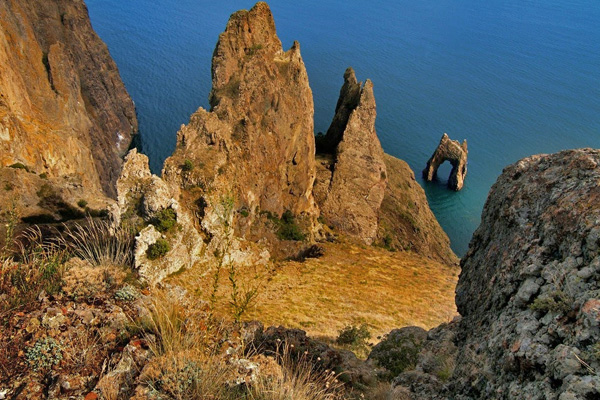
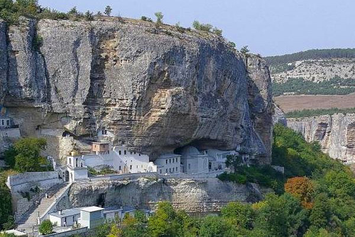
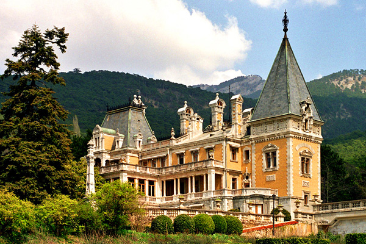
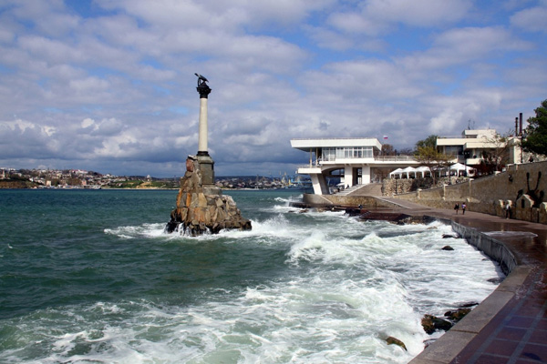

Крым – великолепная здравница, где ежегодно отдыхает и поправляет свое здоровье огромное число туристов. Целебный воздух, морская вода, лечебные грязи, богатый выбор овощей и фруктов – разве этого недостаточно, чтобы провести свой отпуск на курортах Крыма? Отдых в Крыму интересен не только возможностью загорать и купаться, полуостров обладает уникальной природой и древними памятниками архитектуры и искусства.
Туры в Крым всегда были и будут популярны среди отдыхающих, полуостров манит к себе, обещая истинное наслаждение тому, кто сумеет увидеть его красоту. Гурзуф, Алушта, Алупка, Коктебель, Ялта, Судак, Бахчисарай, Форос - сколько сложено песен и стихов о красоте этих мест! О них писали Фет, Цветаева, Ахматова. Мандельштам и Бунин. Сколько знаменитых людей побывало на берегах Крыма, оставив свой след, точно так же как Крым оставил свой след в их душе!
Предлагаем нашим дорогим гостям посетить следующие экскурсии:
Судакская крепость
Судакская крепость (пешеходная экскурсия, знакомство с историей г.Судака, историей строительства уникального архитектурного памятника, продолжительность 2ч)
Новый Свет
Новый Свет (авто/пешеходная, обзор Новосветских бухт, посещение рощи древовидного можжевельника, сквозного грота, купание в Зеленой бухте, протяженность маршрута 15км, продолжительность 5ч, необходимо иметь: удобную обувь, головной убор, купальный костюм) Дегустация шампанских вин
Дегустация шампанских вин (авто/пешеходная, посещение музея виноградарства и виноделия ЗШВ "Новый Свет", дегустация при свечах, продолжительность 2,5ч). В настоящее время ЗШВ "Новый Свет" - один из трех заводов на всем постсоветском пространстве, выпускающих шампанское традиционным методом, с выдерживанием вина в бутылках в течение трех лет.
Прогулки на лошадях (катание на лошадях в зависимости от степени подготовки) + прогулки на квадроциклах (взрослые и дети от 12-ти лет).
Музей катастроф
Музей катастроф на водах в Малореченском (авто/пешеходная, посещение музея истории мореплавания). Музей катастроф на водах открыт в 2009 году в цокольном помещении при Свято-Николаевском храме-маяке в посёлке Малореченское Региона Большая Алушта Крыма. Музей катастроф на водах имеет 16 демонстрационных залов, в которых размещено более 500 интересных экспонатов. Экспозиция Музея катастроф на водах рассказывает о наиболее известных водных катастрофах… В том числе здесь демонстрируются научно-популярные фильмы о самых известных катастрофах на водах, начиная от крушения легендарного «Титаника», и заканчивая гибелью атомной подводной лодки «Курск», а также разрушительных цунами последних лет. Ничего похожего на такой Музей, как в посёлке Малореченское, нет ни в одной стране мира. 
Карадаг
Карадаг (авто/пешеходная, экскурсия по экологической тропе Карадагского заповедника, знакомство с флорой и фауной потухшего вулкана, протяженность маршрута 7км, продолжительность 4ч) 
Бахчисарай
Бахчисарай (авто/пешеходная, знакомство с памятниками юго-западного Крыма, посещение Бахчисарайского дворца, Успенского мужского монастыря, пещерного города Чуфут-Кале, протяженность маршрута 280км, продолжительность 10ч. Необходимо иметь: удобную обувь, головной убор. Ласточкино гнездо
Никита - Ливадия - Ласточкино гнездо - Алупка - Ялта (авто/пешеходная, путешествие по красивейшей дороге вдоль Главной гряды Крымских гор, знакомство с Южным берегом Крыма и посещение дворцов: Ливадийского, Воронцовского, Ласточкино Гнездо с обзорной площадкой, свободное время в Ялте, протяженность маршрута 300км, продолжительность 14ч) 
Массандра
Массандра - Ливадия - Ласточкино гнездо - Воронцовский дворец - Ялта (авто/пешеходная, путешествие по красивейшей дороге вдоль Главной гряды Крымских гор, знакомство с Южным берегом Крыма и посещение дворцов: Массандровского (Александра III), Ливадийского, Воронцовского, Ласточкино Гнездо с обзорной площадкой, свободное время в Ялте, протяженность маршрута 300км, продолжительность 14ч). Большой Каньон Крыма
Пещерный город Эски-Кермен и Большой Каньон Крыма (авто/пешеходная, знакомство с памятниками юго-западного Крыма, экскурсия по одному из самых живописных ландшафтных заповедников юго-западного Крыма, купание в Голубом озере и ванне молодости, протяженность маршрута 380км продолжительность 12ч. Необходимо иметь: удобную обувь, головной убор). Арпатский водопад
Изумрудное озеро (авто/пешеходная, Арпатский водопад, ванна любви, купание в озере, катание на лошадях по желанию. Протяженность маршрута 70 км. продолжительность 7ч. Необходимо иметь: удобную обувь, купальный костюм) Пещера Мраморная
Пещера Мраморная и Эмине-Баир-Хосар (авто/пешеходная, протяженность маршрута 280 км, продолжительность 10ч. Необходимо иметь: удобную обувь закрытого типа, теплую одежду, (t в пещерах 6-8 градусов, пещера оборудована в соответствии с мировыми стандартами, 5-ое место в мире по красоте). Водопад Джур-Джур
Водопад Джур-Джур - Пещера Мраморная (авто/пешеходная, знакомство с природой юго-восточного Крыма, посещение одного из красивейших водопадов Крыма, знакомство с природой Крымского п-ва, таинственным подземным миром сталактитов и сталагмитов, подземными дворцами и водопадами на горном массиве Чатырдаг, протяженность маршрута 280км, продолжительность 10ч. Необходимо иметь: удобную обувь, головной убор, купальный костюм). 
Севастополь
Севастополь (авто/пешеходная, знакомство с памятниками юго-западного Крыма, обзорная экскурсия по городу, посещение Панорамы, Аквариума, свободное время в городе Севастополе. Протяженность маршрута 400км, продолжительность 14ч).